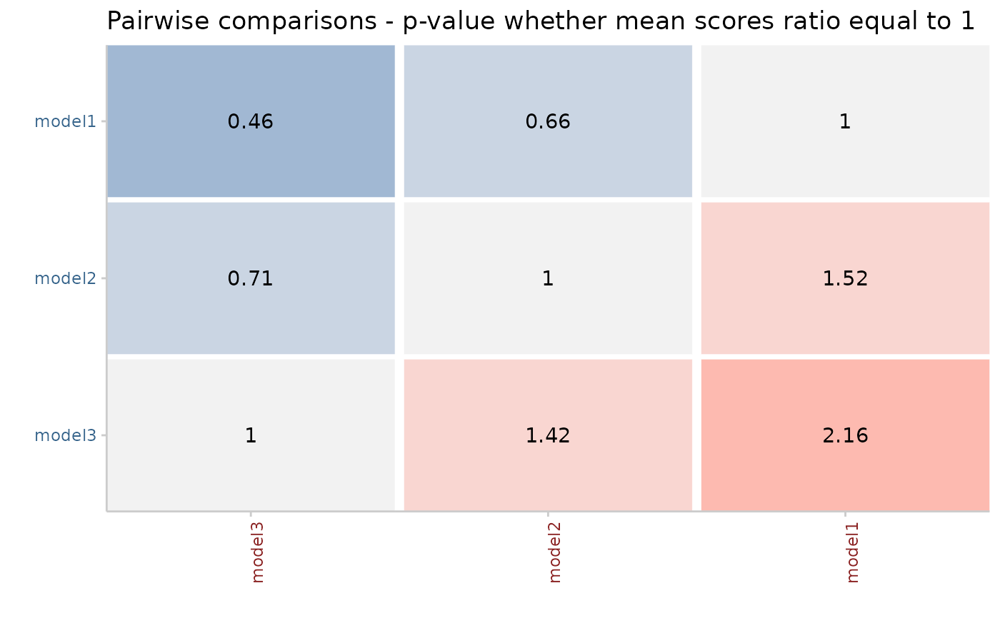

Make pairwise comparisons between models. The code for the pairwise comparisons is inspired by an implementation by Johannes Bracher.
The implementation of the permutation test follows the function permutationTest from the `surveillance` package by Michael Höhle, Andrea Riebler and Michaela Paul.
pairwise_comparison( scores, metric = "interval_score", test_options = list(oneSided = FALSE, test_type = c("non_parametric", "permuation"), n_permutations = 999), baseline = NULL, by = NULL, summarise_by = c("model") )
| scores | A data.frame of unsummarised scores as produced by
|
|---|---|
| metric | A character vector of length one with the metric to do the comparison on. |
| test_options | list with options to pass down to |
| baseline | character vector of length one that deontes the baseline model against which to compare other models. |
| by | character vector of columns to group scoring by. This should be the
lowest level of grouping possible, i.e. the unit of the individual
observation. This is important as many functions work on individual
observations. If you want a different level of aggregation, you should use
|
| summarise_by | character vector of columns to group the summary by. By
default, this is equal to `by` and no summary takes place.
But sometimes you may want to to summarise
over categories different from the scoring.
|
A ggplot2 object with a coloured table of summarised scores
Johannes Bracher, https://jbracher.github.io/
Nikos Bosse
df <- data.frame(model = rep(c("model1", "model2", "model3"), each = 10), date = as.Date("2020-01-01") + rep(1:5, each = 2), location = c(1, 2), interval_score = (abs(rnorm(30))), aem = (abs(rnorm(30)))) res <- scoringutils::pairwise_comparison(df, baseline = "model1") scoringutils::plot_pairwise_comparison(res)#>